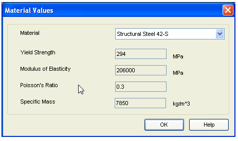
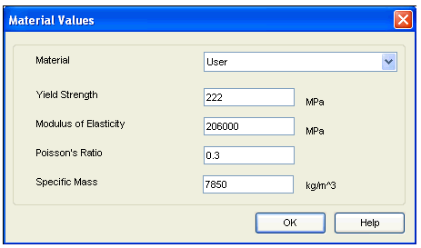

Column Material selection
The Material button is given on Design Parameters tab to select the material of the Column.
Click on this button, the Material Selection window will open.
SEER has given some standard materials for calculation purpose.
Standard material
Simply select the material from material selection control. The values for Yield Strength, Modulus of Elasticity, Poisson’s Ratio and Specific Mass will be automatically displayed as per the material, which are stored in database. Remember when you are using SEER Standard material you cannot change these values.

User Specific Material
In case you want to enter your own values, then you have to select a User material from material selection control.
Now the entry field for Yield Strength, Modulus of Elasticity, Poisson’s Ratio and Specific Mass will get enabled and you can enter own values.

All the values displayed for SEER Standard material are for guidance only and can be used for general calculations purpose. So for more accurate results you are advised to refer to manufacturers data.